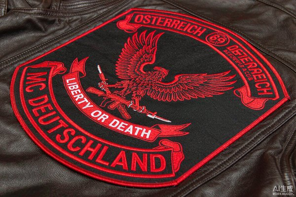
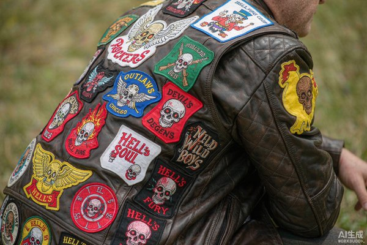

Custom Patches for Motorcycle Clubs: Building Brotherhood
Ask any rider what turns a group of people on bikes into a brotherhood, and the answer usually points to the back of a vest. Custom patches for motorcycle clubs are the visual contract of the road — they tell the world who you ride with, where you're from, and what you stand for, stitched in thread that outlasts the season.

A motorcycle club patch isn't a sticker you slap on for the weekend. It's a membership card you can't fake, earned by miles and meetings rather than a checkout page. For clubs large and small, custom patches are the single most important piece of identity they own — and getting them made right is worth a little obsession.
Whether you're starting a new riding club, refreshing an established chapter's colors, or ordering support gear for an event, this guide walks through how club patches are built, what the conventions are, and how to choose materials and backing that survive life on the road.
1. Why Patches Are the Soul of Club Identity
Clubs are built on belonging, and belonging needs a symbol. A patch does three jobs at once that a printed logo on a tee simply can't:
- It's permanent. Sewn or ironed onto a vest, it becomes part of the garment. You don't take it off at the end of the day.
- It's legible at a glance. At a fuel stop or a rally, the back patch announces the club name and territory before anyone says a word.
- It carries weight. The more worn and traveled the patch, the more story it tells. A faded club color is a badge of time served, not damage.
One Quick Note on Respect
Traditional "colors" — the three-piece back patch with top rocker, center emblem, and bottom rocker — carry deep meaning within established clubs. New clubs should design original artwork and avoid replicating another group's name, territory, or layout. Original patches keep everyone on the right side of respect and the law.
2. Anatomy of a Motorcycle Club Patch Set
Most clubs run a system of patches rather than a single emblem. Understanding the pieces helps you brief a factory and plan your vest layout.
The center back patch
This is the anchor — usually the largest patch, worn between the shoulders. It carries the club's core emblem: an eagle, a skull, a wing, a mascot, or a custom crest. This is where the budget and detail should go, because it's the face of the club.
Top and bottom rockers
Curved banners arcing above and below the center patch. The top typically names the club; the bottom names the territory or chapter. The curve is deliberate — it hugs the shape of the back and reads cleanly from a distance.

Small, color, and morale patches
Beyond the back, riders fill the front and sides with smaller pieces: a club "colors" front patch, state or country identifiers, event commemoratives, and morale patches that show personality. These are the fun, swappable layer — easy to add without rebuilding the whole vest.
3. Design Rules That Make a Club Patch Work
A great club patch is bold, simple, and readable from across a parking lot. A few rules keep it there.
- Limit your palette. Three to five thread colors is the sweet spot. More than that and the detail muddies at patch scale.
- Go bold with the emblem. Fine line art that looks great on a screen falls apart in embroidery. Thick lines and clear negative space translate best.
- Mind the lettering. Rockers need large, legible type. Curved text is harder to produce than straight, so keep the letter count reasonable and the font heavy.
- Reference an era, don't copy a club. Old-school biker imagery — wings, flames, eagles — is fair game as inspiration. Another club's exact name or territory is not.
Scale is the silent killer of club patches. A design that looks perfect at eight inches square can fall apart at three, and most front morale pieces live small. Before you finalize, ask the factory for a proof at the exact finished size — what reads clearly on a screen often needs thickening at patch scale. A good digitizer will flag thin lines and tiny text up front instead of shipping a patch you can't read across a parking lot.
For color choices that read as authentic rather than garish, our color guide breaks down thread matching and contrast. And if you want a specifically aged, heritage feel on a brand-new patch, the tricks in our vintage and retro styles guide apply directly to club colors.
4. Choosing the Right Patch Type
Not every patch material suits a riding vest. Here's how the main options stack up for club use.
Embroidered — the standard
Embroidered patches are the default for club colors, and for good reason: the raised thread catches light, feels substantial, and ages well. They handle bold emblems and rocker text cleanly and look right on leather.
PVC — for weather and abuse
If your chapter rides hard through rain, mud, and sun, PVC patches (rubberized, fully waterproof) shrug off the elements. They're a strong pick for support and event patches that live on the outside of a bag or saddle.
Leather — for a premium, heritage look
Leather patches bring a rugged, high-end texture that suits smaller front or morale pieces. They pair naturally with a leather vest and read as craft, not merch.

5. Backing & Placement: Vest vs Jacket
How a patch attaches matters as much as how it looks, because a vest takes more flex and friction than a wall poster.
- Sew-on for the back patch. The center and rocker set should be sewn on. Stitching holds through years of wear and never peels — this is the traditional, durable choice for colors you never want to lose.
- Iron-on or adhesive for small pieces. Morale and event patches can use heat or peel-and-stick backing for easy swaps, though they won't outlast sewing on a heavily worn vest.
- Velcro for the modular layer. Some riders run a Velcro panel for morale patches they change by mood or event. Our Velcro guide covers the attachment setup.
Placement is mostly convention: center back for the main set, left chest for a small club front patch, and the remaining real estate for morale and support pieces. Leave a little room around the rockers so the curves don't crowd the vest seams.
6. Care & Longevity: Keeping Your Colors Road-Worthy
A well-made club patch can outlive the jacket it rides on, but a little care keeps it looking intentional rather than ragged. The goal isn't to keep it pristine — a traveled patch earns its character — it's to stop preventable damage.
Clean without soaking
Wipe a leather vest with a barely damp cloth; never submerge embroidered patches in water, which loosens adhesive and dulls thread. If a sewn patch gets muddy on a ride, spot-clean and air-dry rather than machine-wash.
Mind the heat and the sun
Keep patches out of the dryer and away from direct, prolonged sun if you want the colors to hold. Some riders actually like a little fade — it reads as earned mileage — so this one's a preference, not a rule.
Catch loose edges early
The moment a stitch starts to lift, re-sew it. A small repair today prevents a corner peeling off at the next rally. Sew-on colors are easy to maintain precisely because the attachment is simple and permanent.
Treat the patch like the membership it represents — a little attention now, and it'll still be sharp years and thousands of miles down the road.
7. Frequently Asked Questions (FAQ)
Q1: What's the difference between a motorcycle club patch and a regular patch?
Scale and system. Club patches are usually larger, built as a coordinated set (center emblem plus rockers), and worn on a vest as a permanent identity marker rather than a one-off decoration. They follow road conventions around layout and territory that casual patches ignore.
Q2: Can a new club use the three-piece "colors" style?
You can use a center patch with top and bottom rockers, but you should design fully original artwork — your own name, emblem, and territory. Avoid replicating another club's exact design or claiming a territory already held. Original colors keep things respectful and trouble-free.
Q3: Which patch material is best for a riding vest?
Embroidered is the safe, classic choice for the main colors. PVC wins for weather-exposed support patches, and leather adds a premium touch to smaller front pieces. Mixing materials across the vest is common and looks intentional.
Q4: Should club back patches be sewn or ironed on?
Sewn on. The back set takes the most wear, and stitching is the only attachment that reliably lasts for years on a flexing vest. Iron-on works for small, low-stress morale patches you expect to change.
Q5: How many colors should a club patch have?
Three to five thread colors is ideal. It keeps the emblem bold and legible at distance and avoids the muddiness that fine, multicolor detail creates at patch scale. Bold and simple always beats busy.
Ready to Build Your Club's Colors?
Send us your emblem and rocker text and we'll turn it into durable, road-ready patches. Free digital proof in 12 hours, no minimum order.
Get Free Quote